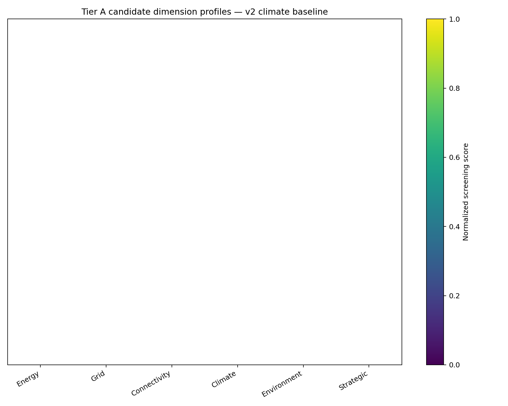
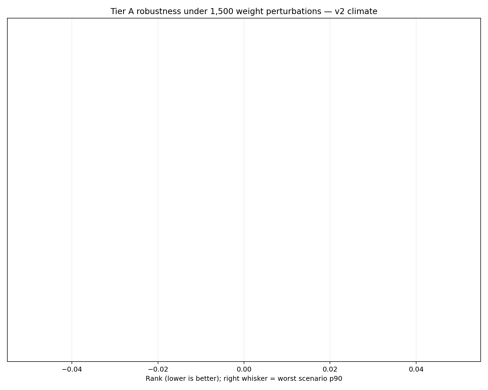
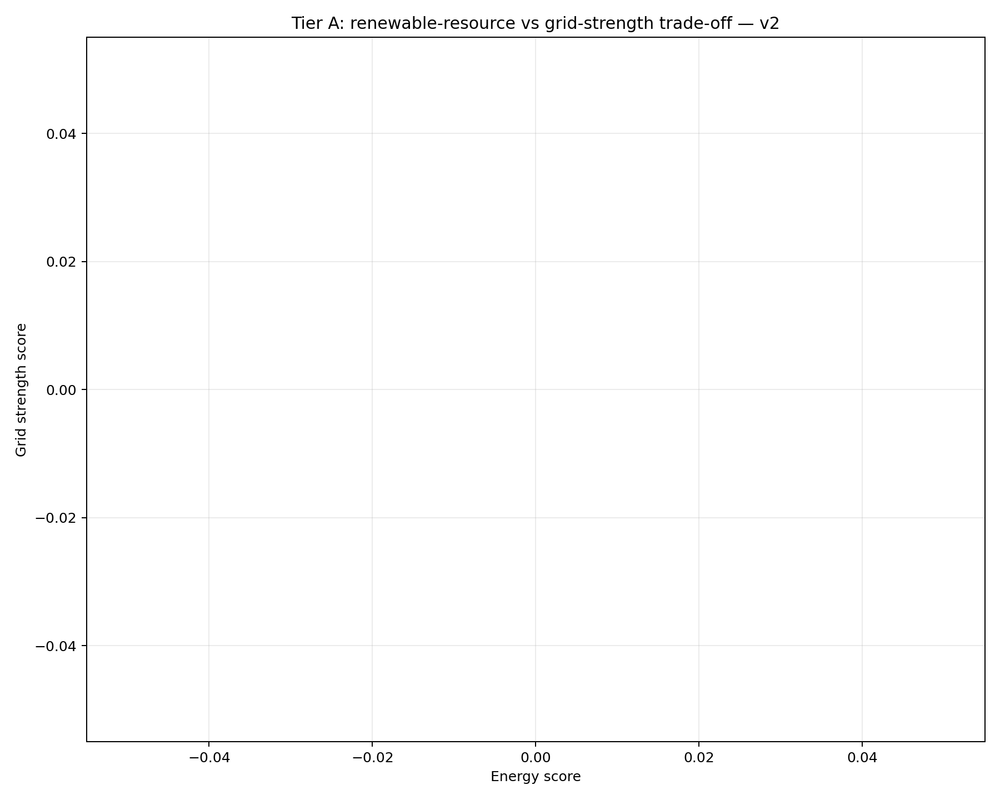

Infrastructure × Energy × Climate × Connectivity
Where could Northeast Brazil host the next generation of green data centres?
A municipality-level screening model built from official Brazilian infrastructure, power-system, renewable-resource, climate, telecom and environmental datasets. The objective is not to predict a “winner”, but to expose the trade-offs behind investable location decisions.
PROVISIONAL RELEASE CANDIDATE · WATER / 2026 CNUC REFRESH IN PROGRESS
Key findingExisting market momentum and physical suitability are related, but not equivalent.
Grid realityTransmission proximity is treated separately from verified connection headroom.
UncertaintyMissing water evidence is excluded from scoring rather than filled with a neutral guess.
Explore the model
Scenario map
*Low-water AI remains provisional until ANA hydrological availability is integrated. Current scores are renormalized over defensible evidence only.
Robust shortlist
Tier-A candidates
Municipalities that remain highly competitive across scenarios and randomized weighting tests.
| Candidate | Archetype | Median rank | Stress P90 |
|---|
Decision logic
Not a single-score beauty contest
The model keeps grid strength, grid-access risk, renewable resource, operating clean-energy ecosystem, fibre-provider diversity, climate/cooling, protected-area exposure and strategic context distinct before combining them.
This matters because a municipality can be strong in infrastructure and still face connection constraints—or have exceptional renewable resources but weak carrier diversity.
Pecém example
São Gonçalo do Amarante is highly competitive even when strategic/ZPE context is removed, yet its grid-access constraint remains visible. The model therefore captures both the investment thesis and its execution risk.
Decision evidence
What separates the robust candidates?
Three views of the same shortlist: dimension profiles, weight sensitivity, and the energy–grid trade-off.



Evidence & uncertainty
What the score does — and does not — mean
Energy
LABREN solar resource, Global Wind Atlas 100 m wind resource, ANEEL operating wind/solar ecosystem and granted pipeline context.
Grid
EPE transmission/substation proximity and ONS operating infrastructure. This is infrastructure strength, not guaranteed MW headroom.
Connectivity
ANATEL fibre backhaul and provider diversity. It does not prove dark-fibre availability, route independence or contracted SLA.
Climate
INMET 1991–2020 normals. All 74 Northeast station codes used in the key climate variables have resolved coordinates with provenance; seven retain explicit relocation/conflict flags.
Environment
CNUC protected-area overlap and hard-screen flags. The automated July-2026 refresh pipeline is now part of the repository.
Water
ANA Q95 surface-water availability is handled as hydrological evidence only. It is not equivalent to a water right, permitted sustainable supply or a facility cooling-water strategy.
Primary sources
Official data lineage
ANEEL SIGA · IBGE municipal mesh · EPE WebMap / transmission studies · ONS open data · INPE/LABREN Solar Atlas · Global Wind Atlas · ANATEL transport network · INMET climate normals · ANA/SNIRH · MMA/CNUC · MDIC/ZPE.